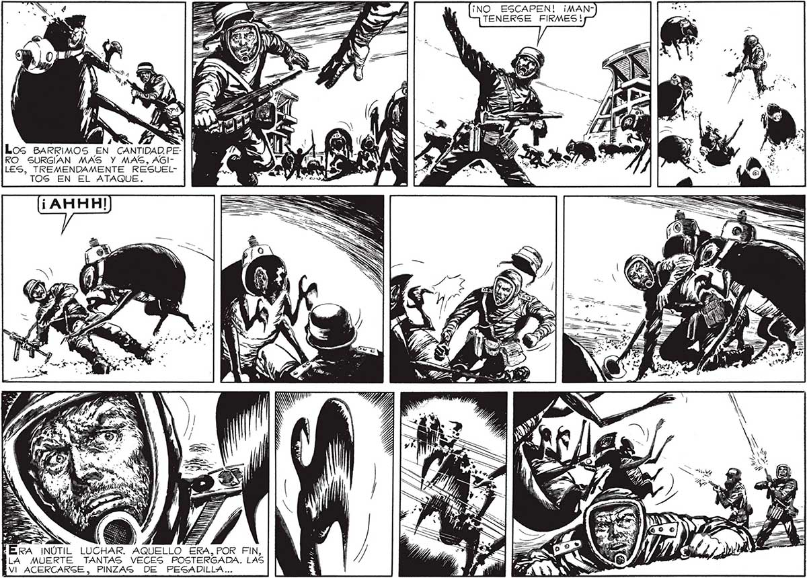

106 ¡NO ESCAPEN! ¡MANTENERSE FIRMES! ; y] Ys > Ñ Los BARRIMOS EN CANTIDAD.PERO SURGIAN MAS Y MAS, AGILES, TREMENDAMENTE RESUELTOS EN EL ATAQUE. 5 . H E | ] f ; ) . l Y El “e N a Pa MITO t- y > > 4 5 » a . Qo e ER ' .. Á Y E Lu + | 7) <= 5 AS de 4 = y ¡ paz R > 5 z É j NA e hs A — / pd Lay > ) , . a AE iy E AR, a . ) E 7 m S £ “e Pa A ERA INÚTIL LUCHAR. AQUELLO ERA, POR FIN, : | 2 NE Y YY €? LA MUERTE TANTAS VECES POSTERGADA. LAS Pen j A a PP. EVI ACERCARSE, PINZAS DE PESADILLA... Y Pe
